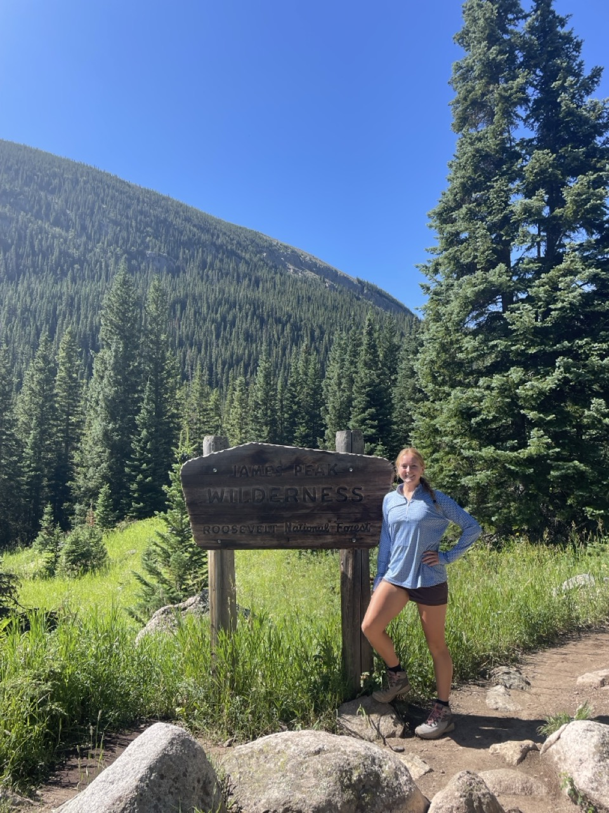

01
About me
Hi, I’m Ellise Putnam! I’m a student-athlete at Colorado School of Mines, where I balance playing soccer with my passion for data science. Originally from Austin—the live music capital—I’ve always loved the energy of country music and the excitement of discovering new places. Whether I’m analyzing sports stats, visualizing data trends, or building machine learning models, I’m driven by the challenge of turning complex data into meaningful insights to create a story. When I’m not coding or on the field, you’ll likely find me reading a book, hiking a new trail, or analyzing my new found favorite show, Severance.
I’ve had the opportunity to apply my data science skills across a variety of projects and experiences. From interning at Bio-Rad Laboratories, where I analyzed large datasets and created visualizations, to developing AI-enhanced tools for exam creation, I thrive on solving real-world problems with data. My projects have ranged from predicting seismic activity using decades of earthquake data to exploring the relationship between Premier League footballers’ wages and fantasy league performance. Whether working with Python, SQL, or machine learning models, I’m always excited to push the boundaries of what data can reveal. I would love to connect and chat about data, sports, or your favorite hiking spot!
I am currently reading Mindmasters: The Data-Driven Science of Predicting and Changing Human Behavior!

